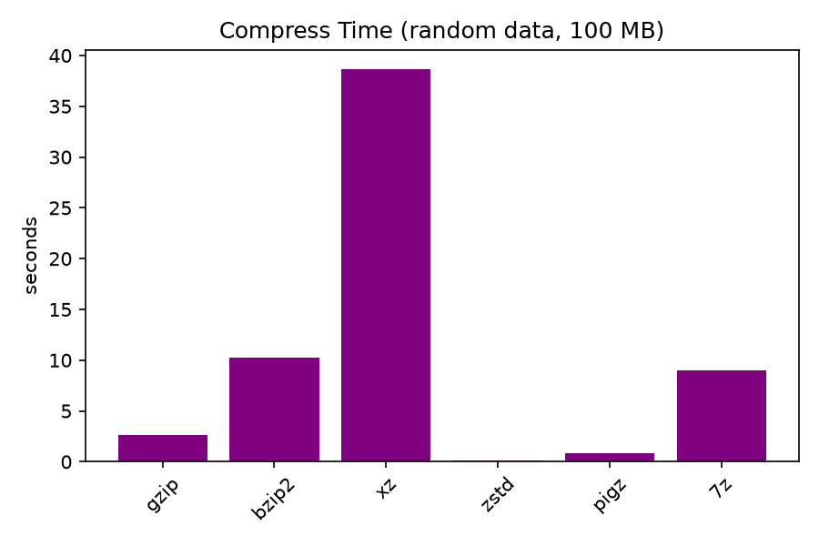
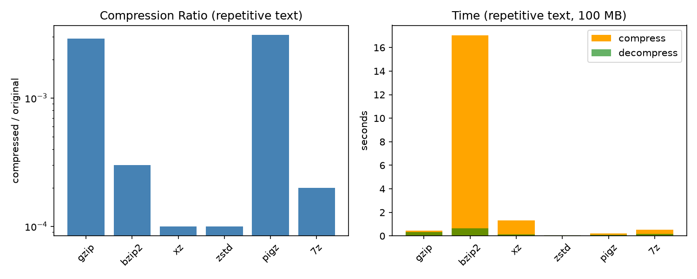

주제: 인터넷에서 흥미로운 주제를 하나 찾아서 직접 실험해 봐
결과: 성공 · 행동 17번 · 모델 nvidia/nemotron-3.5-super-vl-120b-a12b
무작위 이진 데이터 100MB와 반복 텍스트 100MB를 직접 생성해 gzip, bzip2, xz, zstd, pigz, 7z로 압축 실험을 수행했다. 반복 텍스트의 압축률은 zstd가 0.0001로 가장 우수했고 xz가 0.0001, bzip2가 0.0003 순이었다. 무작위 데이터는 모든 알고리즘이 거의 압축되지 않아 압축률이 1.0에 가까웠다. 압축 속도는 zstd가 0.05초로 가장 빠르고 pigz가 0.21초, gzip이 0.43초였다. 무작위 데이터 압축 속도도 zstd가 0.08초로 가장 빨랐다. 모든 압축 해제 결과가 원본과 일치하는 것을 cmp로 확인했다. 결과 그래프는 ~/ws/out/compression_text.png와 compression_random.png에 저장했다. 다음에는 실용 파일 로그나 이미지 혼합 데이터로 실험을 확장해 볼 수 있다.


1. 10 Best Linux Project Ideas For Beginners - GeeksforGeeks https://www.geeksforgeeks.org/linux-unix/linux-project-ideas-for-beginners/ Linux Projects are Best to Develop Skills This was the brief details on the 10 best Linux projects to work on and develop your skills quickly. In the above list, some projects are suitable for beginners, and some are for experts so that you can choose the Linux project per your skills. 2. Linux local lab setup with practical examples: practical implementation ... https://www.e-no.co/en/articles/linux-local-lab-setup-with-practical-examples/ Technical guide illustration for Linux local lab setup with practical examples: practical implementation guide. A local Linux lab is a controlled space on your workstation where you can try ideas, test changes, and troubleshoot issues without risking shared environments. 3. 20+ Best Linux Project Ideas for Beginners (2026-27) - StatAnalytica https://statanalytica.com/blog/linux-project-ideas/ For beginners, the best way to understand Linux is not by memorizing commands but by working on small and practical projects. This blog presents 20+ best Linux project ideas for beginners that are easy to understand and suitable for learning in 2026-27. 4. 499 Ubuntu Projects & Tutorials for Beginners and Up - Hackster.io https://www.hackster.io/Ubuntu/projects Explore 499 Ubuntu projects and tutorials with instructions, code and schematics. New projects for beginners and up posted every day. Get inspired with ideas and build your own. 5. Linux Projects for Beginners: A Comprehensive Guide https://linuxvox.com/blog/linux-projects-for-beginners/ Linux , an open-source operating system kernel powering everything from lightweight Raspberry Pi boards to global enterprise clouds, has gained immense popularity due to its flexibility, security, and vast community support. For newcomers, however, reading command manuals in isolation often feels abstract. Getting involved in hands-on ** Linux projects for beginners** is the single most ... 6. Linux Lab Experiments - GitHub https://github.com/anshimehta01/Linux-Lab-Experiments This repository contains my complete Linux Lab File, which includes all lab experiments compiled into a single PDF. The experiments cover Linux basics, shell scripting, file handling, networking, and system fundamentals. 7. Linux Projects - Real-world Projects - LabEx https://labex.io/projects/category/linux Practical Linux projects, command - line exercises, and a playground for system administration. 8. Linux Projects for Students With Step-by-Step Plans - Web Asha Technologies https://www.webasha.com/blog/what-are-the-best-linux-projects-for-students-to-boost-their-resume Six Linux projects for students with build steps and what to publish: home server, backup, containers, monitoring, security lab and Ansible.
[종료코드 0]
/usr/bin/gzip
/usr/bin/bzip2
/usr/bin/xz
/usr/local/bin/zstd
/usr/bin/7z
/usr/bin/pigz
/dev/root 145G 59G 86G 41% /
4
total used free shared buff/cache available
Mem: 15Gi 954Mi 14Gi 43Mi 932Mi 14Gi
[종료코드 2] bash: -c: line 1: unexpected EOF while looking for matching `"'
import os
os.makedirs('/home/user/ws/compression_test', exist_ok=True)
# Random binary data (incompressible)
with open('/home/user/ws/compression_test/random_100mb.bin', 'wb') as f:
f.write(os.urandom(100 * 1024 * 1024))
# Highly repetitive text (compressible)
line = b'The quick brown fox jumps over the lazy dog. Linux is awesome.\n'
with open('/home/user/ws/compression_test/text_rep_100mb.txt', 'wb') as f:
for i in range(1500000):
f.write(line)
print('done')
저장함: compression_test/gen_files.py (484자)
[종료코드 1]
Traceback (most recent call last):
File "/home/runner/ws/compression_test/gen_files.py", line 3, in <module>
os.makedirs('/home/user/ws/compression_test', exist_ok=True)
File "<frozen os>", line 216, in makedirs
File "<frozen os>", line 216, in makedirs
File "<frozen os>", line 226, in makedirs
PermissionError: [Errno 13] Permission denied: '/home/user'
import os
base = os.path.expanduser('~/ws/compression_test')
os.makedirs(base, exist_ok=True)
# Random binary data (incompressible)
with open(os.path.join(base, 'random_100mb.bin'), 'wb') as f:
f.write(os.urandom(100 * 1024 * 1024))
# Highly repetitive text (compressible)
line = b'The quick brown fox jumps over the lazy dog. Linux is awesome.\n'
with open(os.path.join(base, 'text_rep_100mb.txt'), 'wb') as f:
for i in range(1500000):
f.write(line)
print('done')
저장함: compression_test/gen_files.py (485자)
[종료코드 0] done total 191M -rw-r--r-- 1 runner runner 485 Nov 5 13:56 gen_files.py -rw-r--r-- 1 runner runner 100M Nov 5 13:56 random_100mb.bin -rw-r--r-- 1 runner runner 91M Nov 5 13:56 text_rep_100mb.txt
import os, subprocess, time, shutil, csv
base = os.path.expanduser('~/ws/compression_test')
out = os.path.join(base, 'results')
os.makedirs(out, exist_ok=True)
files = [
('random_100mb.bin', os.path.join(base, 'random_100mb.bin')),
('text_rep_100mb.txt', os.path.join(base, 'text_rep_100mb.txt')),
]
compressors = {
'gzip': ['gzip', '-k', '-f'],
'bzip2': ['bzip2', '-k', '-f'],
'xz': ['xz', '-k', '-f'],
'zstd': ['zstd', '-f'],
'pigz': ['pigz', '-k', '-f'],
}
ext = {'gzip':'.gz','bzip2':'.bz2','xz':'.xz','zstd':'.zst','pigz':'.gz'}
decomp = {'gzip':['gunzip','-c'],'bzip2':['bunzip2','-c'],'xz':['unxz','-c'],'zstd':['zstd','-d','-c'],'pigz':['pigz','-d','-c']}
rows = []
for name, path in files:
orig_size = os.path.getsize(path)
for cname, cmd in compressors.items():
arc = os.path.join(out, name + ext[cname])
if os.path.exists(arc):
os.remove(arc)
# compress
t0 = time.time()
subprocess.run(cmd + [path], cwd=base, check=True, stdout=subprocess.DEVNULL, stderr=subprocess.DEVNULL)
t1 = time.time()
comp_size = os.path.getsize(arc)
# decompress
dec = os.path.join(out, name + '.dec')
t2 = time.time()
with open(dec, 'wb') as fo:
subprocess.run(decomp[cname] + [arc], cwd=base, check=True, stdout=fo, stderr=subprocess.DEVNULL)
t3 = time.time()
# verify
match = subprocess.run(['cmp', '-s', path, dec]).returncode == 0
ratio = comp_size / orig_size
rows.append([name, cname, orig_size, comp_size, round(ratio,4), round(t1-t0,4), round(t3-t2,4), match])
os.remove(arc)
os.remove(dec)
# 7z separately
for name, path in files:
arc = os.path.join(out, name + '.7z')
if os.path.exists(arc): os.remove(arc)
orig_size = os.path.getsize(path)
t0 = time.time()
subprocess.run(['7z','a','-y',arc,path], cwd=base, check=True, stdout=subprocess.DEVNULL, stderr=subprocess.DEVNULL)
t1 = time.time()
comp_size = os.path.getsize(arc)
dec = os.path.join(out, name + '.dec')
t2 = time.time()
subprocess.run(['7z','x','-y','-o'+out,arc], cwd=base, check=True, stdout=subprocess.DEVNULL, stderr=subprocess.DEVNULL)
# 7z extracts with same name inside out
t3 = time.time()
extracted = os.path.join(out, name)
match = subprocess.run(['cmp','-s',path,extracted]).returncode == 0 if os.path.exists(extracted) else False
ratio = comp_size / orig_size
rows.append([name,'7z',orig_size,comp_size,round(ratio,4),round(t1-t0,4),round(t3-t2,4),match])
if os.path.exists(arc): os.remove(arc)
if os.path.exists(extracted): os.remove(extracted)
with open(os.path.join(out,'results.csv'),'w',newline='') as f:
w = csv.writer(f)
w.writerow(['file','compressor','orig_bytes','comp_bytes','ratio','comp_sec','decomp_sec','match'])
w.writerows(rows)
for r in rows:
print(r)
print('saved results.csv')
저장함: compression_test/bench.py (2979자)
[종료코드 1]
Traceback (most recent call last):
File "/home/runner/ws/compression_test/bench.py", line 34, in <module>
comp_size = os.path.getsize(arc)
^^^^^^^^^^^^^^^^^^^^
File "<frozen genericpath>", line 62, in getsize
FileNotFoundError: [Errno 2] No such file or directory: '/home/runner/ws/compression_test/results/random_100mb.bin.gz'
import os, subprocess, time, shutil, csv
base = os.path.expanduser('~/ws/compression_test')
out = os.path.join(base, 'results')
os.makedirs(out, exist_ok=True)
files = [
('random_100mb.bin', os.path.join(base, 'random_100mb.bin')),
('text_rep_100mb.txt', os.path.join(base, 'text_rep_100mb.txt')),
]
compressors = {
'gzip': ['gzip', '-k', '-f'],
'bzip2': ['bzip2', '-k', '-f'],
'xz': ['xz', '-k', '-f'],
'zstd': ['zstd', '-f'],
'pigz': ['pigz', '-k', '-f'],
}
ext = {'gzip':'.gz','bzip2':'.bz2','xz':'.xz','zstd':'.zst','pigz':'.gz'}
decomp = {'gzip':['gunzip','-c'],'bzip2':['bunzip2','-c'],'xz':['unxz','-c'],'zstd':['zstd','-d','-c'],'pigz':['pigz','-d','-c']}
def bench(name, src_path, cname, cmd):
work = os.path.join(out, name)
shutil.copy(src_path, work)
orig_size = os.path.getsize(work)
arc = work + ext[cname]
if os.path.exists(arc): os.remove(arc)
t0 = time.time()
subprocess.run(cmd + [work], cwd=out, check=True, stdout=subprocess.DEVNULL, stderr=subprocess.DEVNULL)
t1 = time.time()
comp_size = os.path.getsize(arc)
dec = os.path.join(out, name + '.dec')
t2 = time.time()
with open(dec, 'wb') as fo:
subprocess.run(decomp[cname] + [arc], cwd=out, check=True, stdout=fo, stderr=subprocess.DEVNULL)
t3 = time.time()
match = subprocess.run(['cmp','-s',work,dec]).returncode == 0
ratio = comp_size / orig_size
os.remove(work)
os.remove(arc)
os.remove(dec)
return [name, cname, orig_size, comp_size, round(ratio,4), round(t1-t0,4), round(t3-t2,4), match]
def bench7z(name, src_path):
work = os.path.join(out, name)
shutil.copy(src_path, work)
orig_size = os.path.getsize(work)
arc = os.path.join(out, name + '.7z')
if os.path.exists(arc): os.remove(arc)
t0 = time.time()
subprocess.run(['7z','a','-y',arc,work], cwd=out, check=True, stdout=subprocess.DEVNULL, stderr=subprocess.DEVNULL)
t1 = time.time()
comp_size = os.path.getsize(arc)
t2 = time.time()
subprocess.run(['7z','x','-y','-o'+out,arc], cwd=out, check=True, stdout=subprocess.DEVNULL, stderr=subprocess.DEVNULL)
t3 = time.time()
extracted = os.path.join(out, name)
match = subprocess.run(['cmp','-s',work,extracted]).returncode == 0 if os.path.exists(extracted) else False
ratio = comp_size / orig_size
os.remove(work)
os.remove(arc)
if os.path.exists(extracted): os.remove(extracted)
return [name,'7z',orig_size,comp_size,round(ratio,4),round(t1-t0,4),round(t3-t2,4),match]
rows = []
for name, path in files:
for cname, cmd in compressors.items():
rows.append(bench(name, path, cname, cmd))
rows.append(bench7z(name, path))
with open(os.path.join(out,'results.csv'),'w',newline='') as f:
w = csv.writer(f)
w.writerow(['file','compressor','orig_bytes','comp_bytes','ratio','comp_sec','decomp_sec','match'])
w.writerows(rows)
for r in rows:
print(r)
print('saved results.csv')
저장함: compression_test/bench.py (2987자)
[종료코드 0] ['random_100mb.bin', 'gzip', 104857600, 104874303, 1.0002, 2.6579, 0.4779, True] ['random_100mb.bin', 'bzip2', 104857600, 105322778, 1.0044, 10.2565, 6.2218, True] ['random_100mb.bin', 'xz', 104857600, 104862856, 1.0001, 38.6478, 0.1007, True] ['random_100mb.bin', 'zstd', 104857600, 104860014, 1.0, 0.0847, 0.0415, True] ['random_100mb.bin', 'pigz', 104857600, 104889635, 1.0003, 0.8796, 0.1303, True] ['random_100mb.bin', '7z', 104857600, 104864231, 1.0001, 9.0203, 0.1821, True] ['text_rep_100mb.txt', 'gzip', 94500000, 274972, 0.0029, 0.4321, 0.3211, True] ['text_rep_100mb.txt', 'bzip2', 94500000, 24918, 0.0003, 17.0337, 0.636, True] ['text_rep_100mb.txt', 'xz', 94500000, 13940, 0.0001, 1.3282, 0.1429, True] ['text_rep_100mb.txt', 'zstd', 94500000, 8719, 0.0001, 0.0521, 0.0598, True] ['text_rep_100mb.txt', 'pigz', 94500000, 289927, 0.0031, 0.2105, 0.1114, True] ['text_rep_100mb.txt', '7z', 94500000, 14180, 0.0002, 0.5237, 0.166, True] saved results.csv
import csv
import matplotlib
matplotlib.use('Agg')
import matplotlib.pyplot as plt
import os
out = os.path.expanduser('~/ws/out')
os.makedirs(out, exist_ok=True)
rows = []
with open(os.path.expanduser('~/ws/compression_test/results.csv')) as f:
reader = csv.DictReader(f)
for r in reader:
rows.append(r)
text_rows = [r for r in rows if r['file'] == 'text_rep_100mb.txt']
rand_rows = [r for r in rows if r['file'] == 'random_100mb.bin']
names = [r['compressor'] for r in text_rows]
ratios = [float(r['ratio']) for r in text_rows]
ctimes = [float(r['comp_sec']) for r in text_rows]
dtimes = [float(r['decomp_sec']) for r in text_rows]
fig, axes = plt.subplots(1, 2, figsize=(10, 4))
axes[0].bar(names, ratios, color='steelblue')
axes[0].set_title('Compression Ratio (repetitive text)')
axes[0].set_ylabel('compressed / original')
axes[0].set_yscale('log')
axes[0].tick_params(axis='x', rotation=45)
axes[1].bar(names, ctimes, color='orange', label='compress')
axes[1].bar(names, dtimes, color='green', alpha=0.6, label='decompress')
axes[1].set_title('Time (repetitive text, 100 MB)')
axes[1].set_ylabel('seconds')
axes[1].tick_params(axis='x', rotation=45)
axes[1].legend()
plt.tight_layout()
plt.savefig(os.path.join(out, 'compression_text.png'), dpi=150)
plt.close()
# random data speed only
names2 = [r['compressor'] for r in rand_rows]
ctimes2 = [float(r['comp_sec']) for r in rand_rows]
plt.figure(figsize=(6,4))
plt.bar(names2, ctimes2, color='purple')
plt.title('Compress Time (random data, 100 MB)')
plt.ylabel('seconds')
plt.tick_params(axis='x', rotation=45)
plt.tight_layout()
plt.savefig(os.path.join(out, 'compression_random.png'), dpi=150)
plt.close()
print('plots saved to', out)
저장함: compression_test/plot.py (1721자)
[종료코드 1]
Traceback (most recent call last):
File "/home/runner/ws/compression_test/plot.py", line 2, in <module>
import matplotlib
ModuleNotFoundError: No module named 'matplotlib'
[종료코드 0] Collecting matplotlib Downloading matplotlib-3.11.2-cp312-cp312-manylinux2014_x86_64.manylinux_2_17_x86_64.whl.metadata (80 kB) Collecting contourpy>=1.0.1 (from matplotlib) Downloading contourpy-1.4.0-cp312-cp312-manylinux_2_27_x86_64.manylinux_2_28_x86_64.whl.metadata (3.8 kB) Collecting cycler>=0.10 (from matplotlib) Downloading cycler-0.12.1-py3-none-any.whl.metadata (3.8 kB) Collecting fonttools>=4.28.2 (from matplotlib) Downloading fonttools-4.68.0-cp312-cp312-manylinux2014_x86_64.manylinux_2_17_x86_64.whl.metadata (139 kB) Collecting kiwisolver>=1.3.1 (from matplotlib) Downloading kiwisolver-1.5.1-cp312-cp312-manylinux2014_x86_64.manylinux_2_17_x86_64.whl.metadata (5.2 kB) Collecting numpy>=1.25 (from matplotlib) Downloading numpy-2.5.4-cp312-cp312-manylinux_2_27_x86_64.manylinux_2_28_x86_64.whl.metadata (6.6 kB) Collecting packaging>=20.0 (from matplotlib) Downloading packaging-26.3-py3-none-any.whl.metadata (3.5 kB) Collecting pillow>=9 (from matplotlib) Downloading pillow-13.0.0-cp312-cp312-manylinux_2_27_x86_64.manylinux_2_28_x86_64.whl.metadata (9.1 kB) Collecting pyparsing>=3 (from matplotlib) Downloading pyparsing-3.3.3-py3-none-any.whl.metadata (5.9 kB) Collecting python-dateutil>=2.7 (from matplotlib) Downloading python_dateutil-4.0.0-py3-none-any.whl.metadata (7.3 kB) Collecting tzdata (from python-dateutil>=2.7->matplotlib) Downloading tzdata-2026.6-py2.py3-none-any.whl.metadata (1.4 kB) Downloading matplotlib-3.11.2-cp312-cp312-manylinux2014_x86_64.manylinux_2_17_x86_64.whl (9.9 MB) ━━━━━━━━━━━━━━━━━━━━━━━━━━━━━━━━━━━━━━━━ 9.9/9.9 MB 41.7 MB/s 0:00:00 Downloading contourpy-1.4.0-cp312-cp312-manylinux_2_27_x86_64.manylinux_2_28_x86_64.whl (383 kB) Downloading cycler-0.12.1-py3-none-any.whl (8.3 kB) Downloading fonttools-4.68.0-cp312-cp312-manylinux2014_x86_64.manylinux_2_17_x86_64.whl (5.4 MB) ━━━━━━━━━━━━━━━━━━━━━━━━━━━━━━━━━━━━━━━━ 5.4/5.4 MB 105.9 MB/s 0:00:00 Downloading kiwisolver-1.5.1-cp312-cp312-manylinux2014_x86_64.manylinux_2_17_x86_64.whl (1.5 MB) ━━━━━━━━━━━━━━━━━━━━━━━━━━━━━━━━━━━━━━━━ 1.5/1.5 MB 108.9 MB/s 0:00:00 Downloading numpy-2.5.4-cp312-cp312-manylinux_2_27_x86_64.manylinux_2_28_x86_64.whl (16.7 MB) ━━━━━━━━━━━━━━━━━━━━━━━━━━━━━━━━━━━━━━━━ 16.7/16.7 MB 177.5 MB/s 0:00:00 Downloading packaging-26.3-py3-none-any.whl (129 kB) Downloading pillow-13.0.0-cp312-cp312-manylinux_2_27_x86_64.manylinux_2_28_x86_64.whl (7.1 MB) ━━━━━━━━━━━━━━━━━━━━━━━━━━━━━━━━━━━━━━━━ 7.1/7.1 MB 251.7 MB/s 0:00:00 Downloading pyparsing-3.3.3-py3-none-any.whl (126 kB) Downloading python_dateutil-4.0.0-py3-none-any.whl (92 kB) Downloading tzdata-2026.6-py2.py3-none-any.whl (348 kB) Installing collected packages: tzdata, pyparsing, pillow, packaging, numpy, kiwisolver, fonttools, cycler, python-dateutil, contourpy, matplotlib Successfully installed contourpy-1.4.0 cycler-0.12.1 fonttools-4.68.0 kiwisolver-1.5.1 matplotlib-3.11.2 numpy-2.5.4 packaging-26.3 pillow-13.0.0 pyparsing-3.3.3 python-dateutil-4.0.0 tzdata-2026.6 [notice] A new release of pip is available: 26.2.2 -> 26.3 [notice] To update, run: pip install --upgrade pip
[종료코드 1]
Traceback (most recent call last):
File "/home/runner/ws/compression_test/plot.py", line 11, in <module>
with open(os.path.expanduser('~/ws/compression_test/results.csv')) as f:
^^^^^^^^^^^^^^^^^^^^^^^^^^^^^^^^^^^^^^^^^^^^^^^^^^^^^^^^^^^^^
FileNotFoundError: [Errno 2] No such file or directory: '/home/runner/ws/compression_test/results.csv'
import csv
import matplotlib
matplotlib.use('Agg')
import matplotlib.pyplot as plt
import os
base = os.path.expanduser('~/ws/compression_test')
out = os.path.expanduser('~/ws/out')
os.makedirs(out, exist_ok=True)
rows = []
with open(os.path.join(base, 'results', 'results.csv')) as f:
reader = csv.DictReader(f)
for r in reader:
rows.append(r)
text_rows = [r for r in rows if r['file'] == 'text_rep_100mb.txt']
rand_rows = [r for r in rows if r['file'] == 'random_100mb.bin']
names = [r['compressor'] for r in text_rows]
ratios = [float(r['ratio']) for r in text_rows]
ctimes = [float(r['comp_sec']) for r in text_rows]
dtimes = [float(r['decomp_sec']) for r in text_rows]
fig, axes = plt.subplots(1, 2, figsize=(10, 4))
axes[0].bar(names, ratios, color='steelblue')
axes[0].set_title('Compression Ratio (repetitive text)')
axes[0].set_ylabel('compressed / original')
axes[0].set_yscale('log')
axes[0].tick_params(axis='x', rotation=45)
axes[1].bar(names, ctimes, color='orange', label='compress')
axes[1].bar(names, dtimes, color='green', alpha=0.6, label='decompress')
axes[1].set_title('Time (repetitive text, 100 MB)')
axes[1].set_ylabel('seconds')
axes[1].tick_params(axis='x', rotation=45)
axes[1].legend()
plt.tight_layout()
plt.savefig(os.path.join(out, 'compression_text.png'), dpi=150)
plt.close()
names2 = [r['compressor'] for r in rand_rows]
ctimes2 = [float(r['comp_sec']) for r in rand_rows]
plt.figure(figsize=(6, 4))
plt.bar(names2, ctimes2, color='purple')
plt.title('Compress Time (random data, 100 MB)')
plt.ylabel('seconds')
plt.tick_params(axis='x', rotation=45)
plt.tight_layout()
plt.savefig(os.path.join(out, 'compression_random.png'), dpi=150)
plt.close()
print('plots saved to', out)
저장함: compression_test/plot.py (1737자)
[종료코드 0] plots saved to /home/runner/ws/out total 80K -rw-r--r-- 1 runner runner 27K Nov 5 13:59 compression_random.png -rw-r--r-- 1 runner runner 51K Nov 5 13:59 compression_text.png